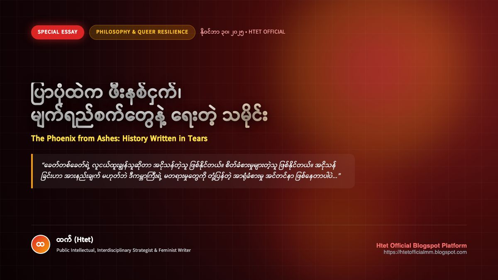
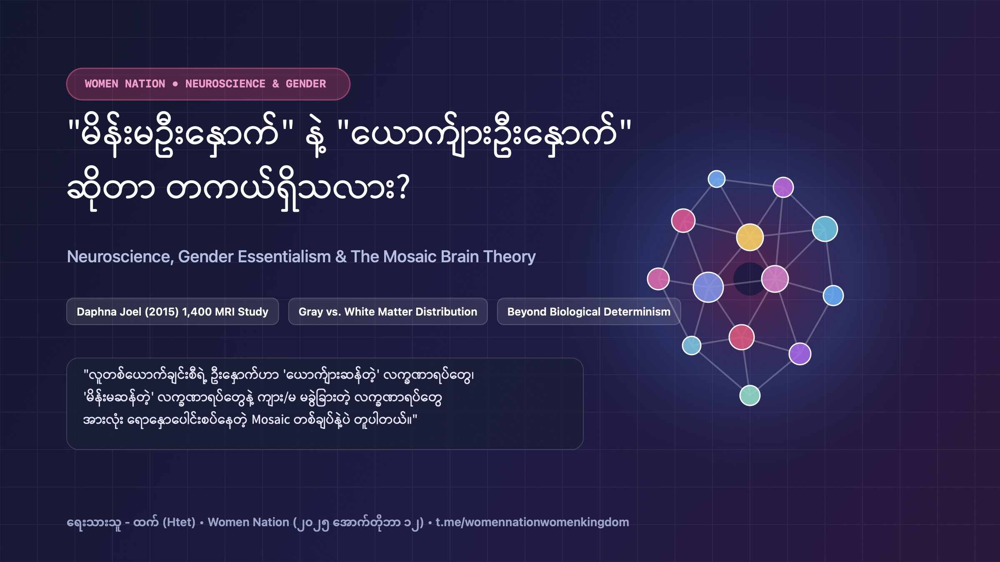
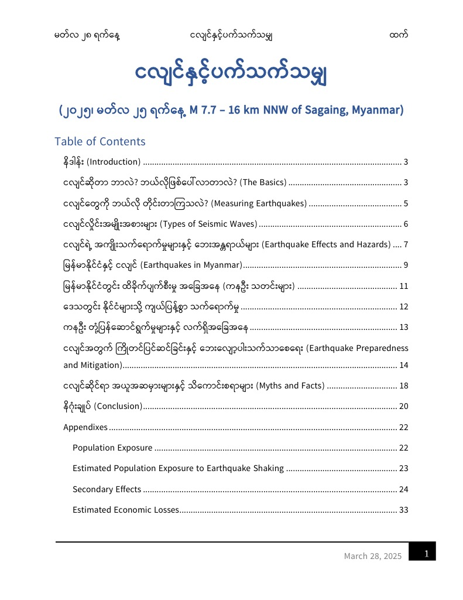
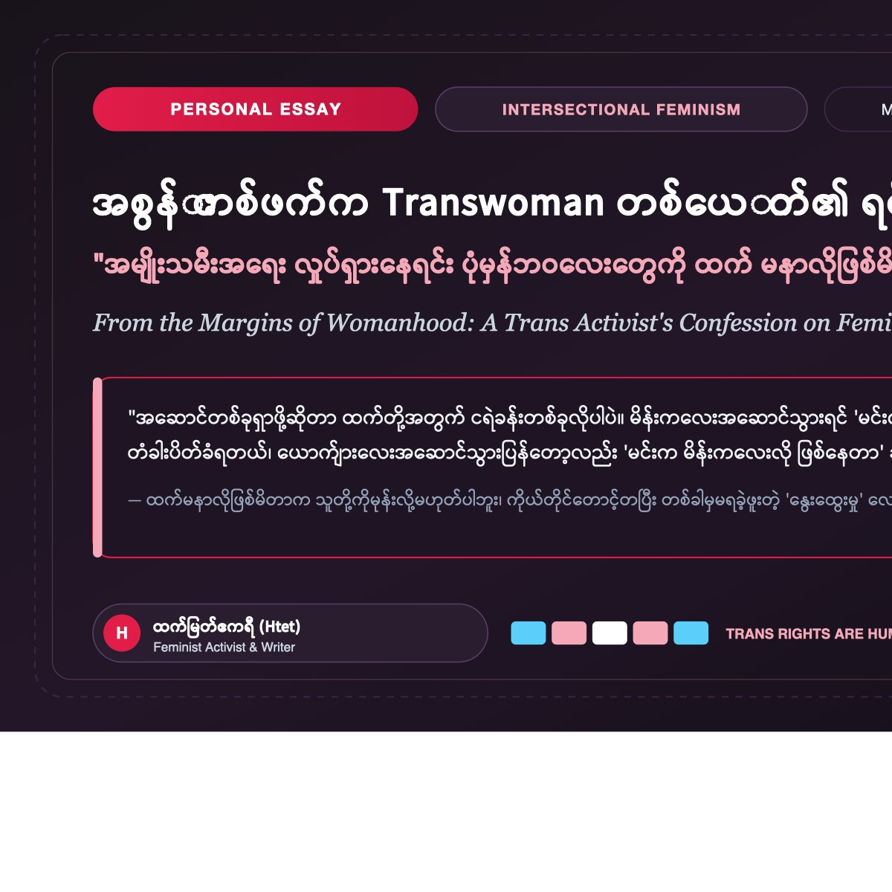
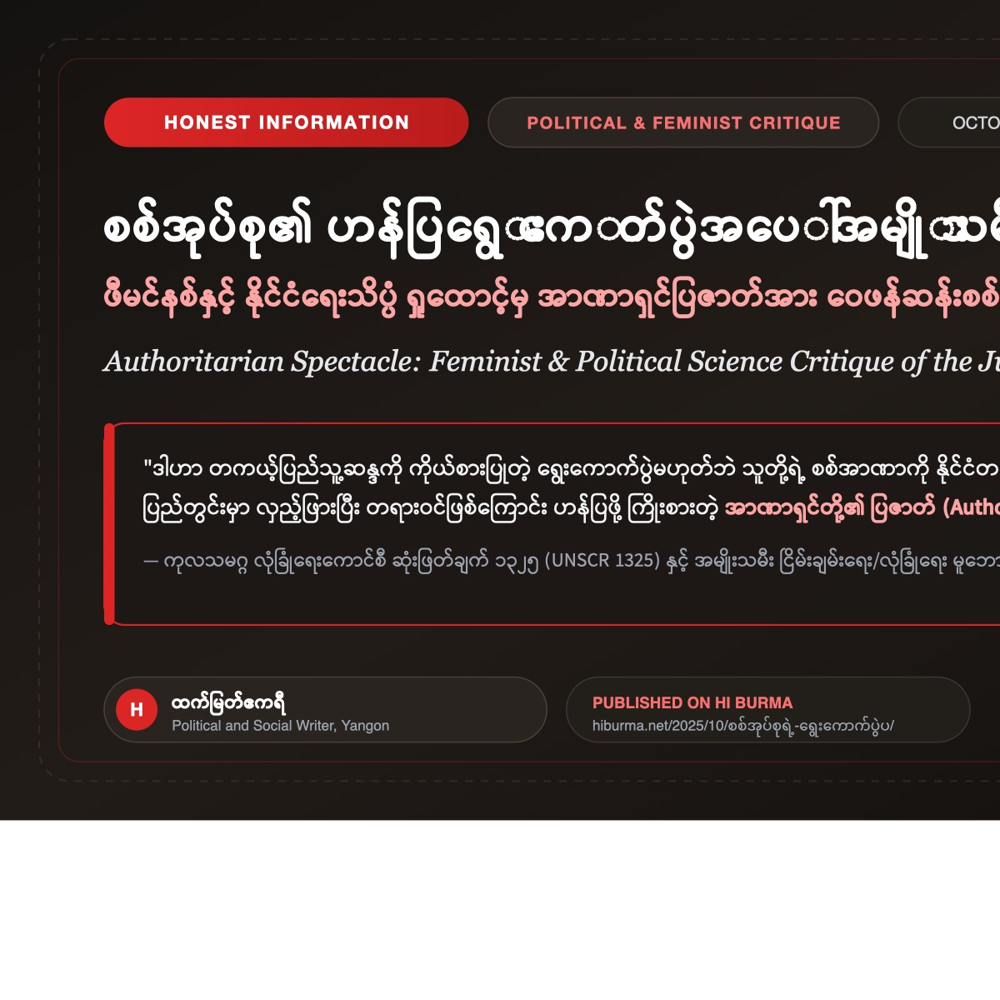
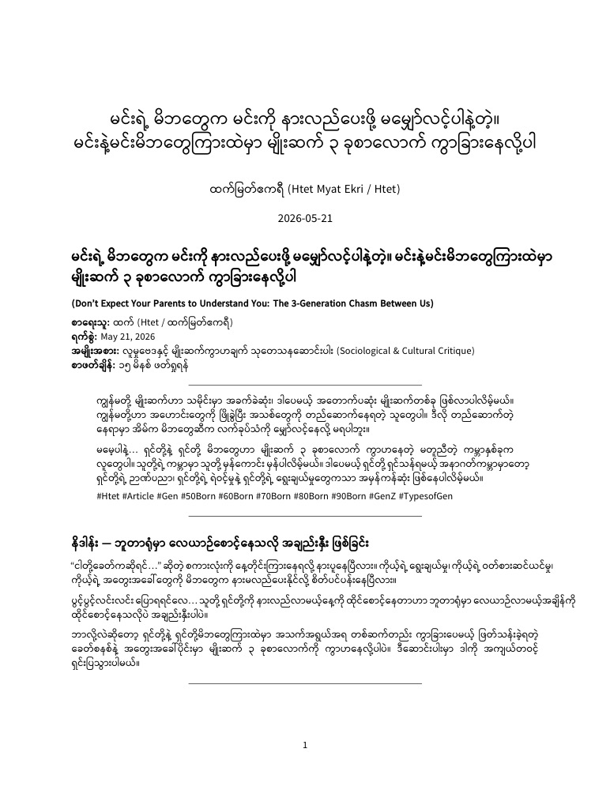
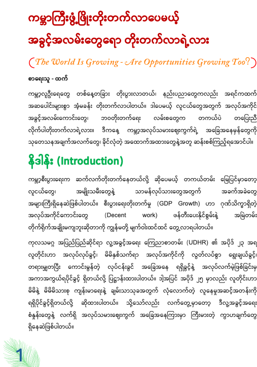

စာစောင်များနှင့် သုတေသနစာတမ်းများ
နိုင်ငံရေးဒဿနိကဗေဒ၊ Trans လွတ်မြောက်ရေး၊ ဖီမင်နစ်ဇင်နှင့် လူမှုတရားမျှတမှုဆိုင်ရာ မိုနိုဂရပ်ဖ်များ၊ သုတေသန မူဝါဒစာတမ်းများနှင့် လူထုလက်စွဲ ဇင်းန် (Zines) စုစည်းမှု ဖြစ်ပါသည်။ ပညာရပ်ဆိုင်ရာ ကိုးကားရန်အတွက် APA၊ Chicago၊ MLA နှင့် BibTeX စနစ်များဖြင့် အလွယ်တကူ ကူးယူနိုင်ပါသည်။
စာတမ်းများ၊ လက်စွဲများနှင့် ကိုးကားချက် ဖိုင်တွဲများ
အင်တာနက်မရှိချိန်တွင် အော့ဖ်လိုင်းဖတ်ရှုနိုင်ရန်နှင့် ပညာရပ်ဆိုင်ရာ ရည်ညွှန်းကိုးကားနိုင်ရန် စာတမ်းများကို Full Version PDF (.pdf)၊ Markdown (.md)၊ BibTeX (.bib)၊ နှင့် ZIP Bundle အဖြစ် တိုက်ရိုက် အခမဲ့ ဒေါင်းလုဒ် ရယူနိုင်ပါသည်။
IdeaHub Open Digital Library တရားဝင် Telegram စာကြည့်တိုက်
သုတေသီများနှင့် လူငယ်များအတွက် History, Economics, LGBTQIA+ & Feminism, Political Science, Geography အစရှိသည့် ဘာသာရပ်ဆိုင်ရာ စာအုပ်ဖိုင်ပေါင်း ၁၅၂၂ ခုကျော်ကို စနစ်တကျ ကဏ္ဍခွဲ၍ အခမဲ့ စုစည်းတင်ပြထားသော ပြည်သူ့စာကြည့်တိုက်။
"ထက်" ဆိုတဲ့ ကျမကို ဘယ်သူက အပိုင်စီးထားတာလဲ ခေါင်းစဉ်အောက်က အတွေးများ
၂၀၂၅ ခုနှစ် သြဂုတ်လ ၃၁ ရက်နေ့တွင် ရေးသားထုတ်ဝေခဲ့သော နက်နဲလှသည့် ဖြစ်တည်မှုဒဿနနှင့် ဒစ်ဂျစ်တယ်လူမှုဗေဒ သုတေသန စာတမ်း ဖြစ်ပါသည်။ သူငယ်ချင်းတစ်ဦး၏ 'ပြန်ပေးဆွဲခံထားရသလား' ဟူသော စိုးရိမ်စကားမှစတင်ကာ ၂၁ ရာစု Digital ခေတ်၏ Ghost in the Shell၊ Deepfake နှင့် Post-Truth ခေတ်၏ မယုံကြည်မှုဗိုင်းရပ်စ်၊ Algorithm ထောင်ချောက်၊ Cis-normative အလှအပစံနှုန်းများ၊ အာဏာရှင်နိုင်ငံရေးဖိနှိပ်မှုနှင့် မျှော်လင့်ချက်ဘောင်များကြားမှ Transwoman စာရေးသူတစ်ဦး၏ ရေလိုစီးဆင်းကြီးထွားခွင့်နှင့် ကိုယ်ပိုင်ဖြစ်တည်မှု အချုပ်အခြာအာဏာကို ဒဿနရှုထောင့်မှ အချက်ကျကျ မီးမောင်းထိုးပြထားပါသည်။
ပြာပုံထဲက ဖီးနစ်ငှက်၊ မျက်ရည်စက်တွေနဲ့ ရေးတဲ့ သမိုင်း

၂၀၂၅ ခုနှစ် နိုဝင်ဘာလ ၃၀ ရက်နေ့တွင် ရေးသားထုတ်ဝေခဲ့သော နက်နဲလှသည့် လူမှုရေးဒဿနနှင့် ကိုယ်တွေ့ဖီမင်နစ် အတွေးအခေါ် စာမူ ဖြစ်ပါသည်။ အငိုသန်ခြင်းသည် အားနည်းချက်မဟုတ်ဘဲ ကမ္ဘာ့မတရားမှုများကို တုံ့ပြန်သည့် အာရုံခံစားမှု အင်တင်နာ ဖြစ်ကြောင်း၊ Gen Z နှင့် Queer လူငယ်တို့၏ ခံနိုင်ရည်စွမ်း၊ နာကျင်မှုမှ တော်လှန်ရေးသို့ ကူးပြောင်းသည့် ဖော်မြူလာနှင့် သမိုင်းကို ပြန်လည်ရေးထိုးမည့် ခေတ်သစ် အများပြည်သူဆိုင်ရာ ဉာဏ်ပညာရှင် (Public Intellectual) တို့၏ စာနာမှုအခြေပြု ဉာဏ်ပညာကို စနစ်တကျ တင်ပြထားပါသည်။
"ကြယ်တွေကြွေတဲ့အခါ ပြည့်တန်ဆာတွေက ရယ်နေကြတယ်တဲ့လား" — တန်ဖိုးကို မည်သူက သတ်မှတ်သနည်း၊ ဂုဏ်သိက္ခာကို မည်သည့်နေရာတွင် ရှာဖွေရမည်နည်း
၂၀၂၅ ခုနှစ် စက်တင်ဘာလတွင် ရေးသားခဲ့သော နက်နဲသည့် နိုင်ငံရေးဒဿနနှင့် ဖီမင်နစ် အတွေးအခေါ် စာမူ ဖြစ်ပါသည်။ 'နိုင်ငံရေးသမားများ ငတ်ပြတ်နေချိန်တွင် ပြည့်တန်ဆာများက ချမ်းသာနေသည်' ဟူသော စကားရပ်အပေါ် Karl Marx ၏ ပိုလျှံတန်ဖိုးသီအိုရီ (Surplus Value)၊ အရန်အလုပ်သမားတပ်မကြီး (Reserve Army of Labor)၊ အလုပ်သမားအခွင့်အရေးနှင့် လိင်လုပ်ငန်းအား ရာဇဝတ်မှုမှ ကင်းလွတ်ခွင့်ပြုရေး (Decriminalization) ဥပဒေမူဘောင် ၄ မျိုးဖြင့် စနစ်ကျစွာ ခွဲခြမ်းစိတ်ဖြာ တင်ပြထားပါသည်။
"မိန်းမဦးနှောက်" နဲ့ "ယောက်ျားဦးနှောက်" ဆိုတာ တကယ်ရှိသလား? — ဦးနှောက်အာရုံကြောသိပ္ပံနှင့် Mosaic Brain သီအိုရီ

၂၀၂၅ ခုနှစ် Women Nation အထူးထုတ်အဖြစ် ထုတ်ဝေခဲ့သော သိပ္ပံနှင့် ဖီမင်နစ် သုတေသနဆောင်းပါး။ 'ယောက်ျားဦးနှောက်' နှင့် 'မိန်းမဦးနှောက်' ဟူသော ဒွိစုံခွဲခြားမှုအား ခေတ်သစ် ဦးနှောက်အာရုံကြောသိပ္ပံ (Neuroscience)၊ fMRI စကင်များနှင့် ပါမောက္ခ Daphna Joel ၏ MRI ဦးနှောက်ပေါင်း ၁,၄၀၀ ကျော် သုတေသနပြုထားသော Mosaic Brain သီအိုရီတို့ဖြင့် သိပ္ပံနည်းကျ စနစ်တကျ ချေပထားပါသည်။
ရာသီစောလာခြင်း (Early Puberty) — သိပ္ပံ၊ လူမှုရေးနှင့် လူငယ်များ၏ စိန်ခေါ်မှု
၈ နှစ်အရွယ် ကလေးမလေးများ၌ ရာသီစောလာခြင်းနှင့် ပတ်သက်၍ EDCs ဓာတုပစ္စည်းများ၊ Leptin ဟော်မုန်း၊ ဆယ်ကျော်သက် စိတ်ကျန်းမာရေး၊ သမိုင်းဝင် လားရာများနှင့် ကျယ်ပြန့်လွှမ်းခြုံသော လိင်ပညာပေး (CSE) မူဝါဒဆိုင်ရာ ဖေမီနစ် သုတေသနစာတမ်း ဖြစ်ပါသည်။
ငလျင်နှင့်ဆိုင်သမျှသိစရာမှတ်စရာ အထူးဆောင်းပါး — ၂၀၂၅ မတ် ၂၈ စစ်ကိုင်း-မန္တလေး Mw 7.7 ငလျင်ကြီး သုတေသနနှင့် ဘေးအန္တရာယ် ကာကွယ်ရေး လက်စွဲ

၂၀၂၅ ခုနှစ် မတ်လ ၂၈ ရက် စစ်ကိုင်း-မန္တလေး Mw 7.7 ငလျင်ကြီးနှင့် ပတ်သက်၍ ထက် ရေးသားပြုစုခဲ့သော ၄၀-မျက်နှာပါ သိပ္ပံသုတေသနနှင့် ဘေးအန္တရာယ် ကာကွယ်ရေး လက်စွဲစာအုပ်ကြီး။ သမိုင်းဝင် အင်းဝတံတားကြီး ဆုံးရှုံးရမှု၊ စစ်ကိုင်းပြတ်ရွေ့ကြော လှုပ်ရှားမှု၊ အရေးပေါ် Go Bag ၁၄ မျိုး စစ်ဆေးရန်စာရင်းနှင့် USGS PAGER ဒေတာများ အပြည့်အစုံ ပါဝင်သည်။
အစွန်းတစ်ဖက်က Transwoman တစ်ယောက်၏ ရင်ဖွင့်သံ: 'အမျိုးသမီးအရေး လှုပ်ရှားနေရင်း ပုံမှန်ဘဝလေးတွေကို ထက် မနာလိုဖြစ်မိတယ်'

၂၀၂၆ ခုနှစ် မေလ ၂၂ ရက်နေ့တွင် ရေးသားခဲ့သော ရိုးသားနာကျင်ဖွယ် ကိုယ်တွေ့ဒဿနဆောင်းပါး ဖြစ်ပါသည်။ Cisgender အမျိုးသမီးများ၏ မိသားစုနွေးထွေးမှုနှင့် သာမန်ဘဝကို အားကျမိခြင်း၊ ငွေပေးနေပါသော်လည်း အဆောင်ငြင်းပယ်ခံရသည့် အိမ်ရာမဲ့အကျပ်အတည်းနှင့် ပိုမိုအားလုံးကို ဖက်တွယ်နိုင်သော လူ့ဘောင်သစ်အတွက် ဖီမင်နစ် ရင်ဖွင့်ချက် ဖြစ်ပါသည်။
ဒစ်ဂျစ်တယ်ခေတ်တွင် လူငယ်များအတွက် မရှိမဖြစ်လိုအပ်သော အနာဂတ်စွမ်းရည်များ (IdeaHub Myanmar)
၂၀၂၆ ခုနှစ် ဇူလိုင်လ ၅ ရက်နေ့တွင် IdeaHub Myanmar ၌ ထုတ်ဝေခဲ့သော သုတေသနဆောင်းပါး ဖြစ်ပါသည်။ ILO ၏ အချက်အလက်များကို အခြေခံ၍ ကမ္ဘာ့အလုပ်လက်မဲ့နှုန်း ၄.၉% (သန်း ၁၈၆ ဦး) နှင့် NEET လူငယ် ၂၃.၃% ပြဿနာများ၊ ၂၀၃၀ ပြည့်နှစ် အလုပ်အကိုင် ၂၄ သန်း (လူငယ် ၆.၄ သန်း)၊ AI ကြောင့် အစားထိုးခံရနိုင်ခြေ၊ မီဒီယာအသိပညာနှင့် ပညာရေး-ဈေးကွက် မကိုက်ညီမှုများကို စနစ်တကျ ဆန်းစစ်ထားပါသည်။
စစ်အုပ်စု၏ ဟန်ပြရွေးကောက်ပွဲအပေါ် ဖီမင်နစ်နှင့် နိုင်ငံရေးသိပ္ပံ ရှုထောင့်မှ သဘောထားအမြင် (Honest Information မေးမြန်းခန်း)

၂၀၂၅ ခုနှစ် အောက်တိုဘာလ ၂၇ ရက်နေ့တွင် Honest Information (HI Burma) မှ ထုတ်ဝေခဲ့သော သဘောထားဆန်းစစ်ချက် ဖြစ်ပါသည်။ စစ်အုပ်စု၏ ရွေးကောက်ပွဲသည် ပြည်သူ့ဆန္ဒကို ကိုယ်စားမပြုသော 'အာဏာရှင်တို့၏ ပြဇာတ် (Authoritarian Spectacle)' သာ ဖြစ်ကြောင်း၊ မဲပေးရန် အတင်းအကျပ် ခြိမ်းခြောက်မှု (Coercion to vote) နှင့် ကုလသမဂ္ဂ ဆုံးဖြတ်ချက် ၁၃၂၅ (UNSCR 1325) မူဘောင်များအရ စနစ်တကျ ဝေဖန်ဆန်းစစ်ထားပါသည်။
စစ်အာဏာသိမ်းမှု (၅) နှစ်ပြည့် CDM ကျောင်းသူ ထက်မြတ်ဧကရီ၏ သမိုင်းနှင့် အနာဂတ် ရပ်တည်ချက် (Honest Information အထူးအင်တာဗျူး)

၂၀၂၆ ခုနှစ် ဇန်နဝါရီလ ၂၉ ရက်နေ့တွင် Honest Information (HI) သတင်းဌာနမှ စစ်အာဏာသိမ်းမှု ၅ နှစ်ပြည့် အထိမ်းအမှတ်အဖြစ် မေးမြန်းခဲ့သော သီးသန့် အင်တာဗျူး ဖြစ်ပါသည်။ အသက် ၁၂ နှစ်အရွယ် Grade 7 ကျောင်းသူလေးမှသည် ၅ နှစ်တာ တော်လှန်ရေးကာလအတွင်း ကိုယ်တိုင်လေ့လာသင်ယူမှုဖြင့် GED အောင်မြင်မှု၊ မြန်မာ့နွေဦးတက္ကသိုလ် (MNOU) ၃ နှစ်ပြည့် မဂ္ဂဇင်း ရွေးချယ်ခံဆောင်းပါးနှင့် ဂုဏ်ပြုဆု၊ Commufemocratism ဒဿနနှင့် စာမျက်နှာ ၁၇၁ မျက်နှာပါ ဒဿနစာအုပ်ကြီး ထုတ်ဝေနိုင်ခဲ့သည့် ခရီးစဉ်အား ပွင့်လင်းရိုးသားစွာ ဖြေကြားထားပါသည်။
နိုင်ငံတကာ သုတေသန၊ ဒဿနနှင့် စာပေမော်ကွန်း မှတ်တမ်းချုပ် (၅ ဘာသာ)

နိုင်ငံရေးဒဿနိကဗေဒ (Commufemocratism)၊ လူမှုတန်းတူညီမျှရေး လှုပ်ရှားမှုများနှင့် စာပေထုတ်ဝေမှုများအား နိုင်ငံတကာ စာပေလောကနှင့် သုတေသီများ လွတ်လပ်စွာ လေ့လာစိစစ်နိုင်ရန် ပြုစုထားသော ၅ ဘာသာသုံး (မြန်မာ၊ အင်္ဂလိပ်၊ တရုတ်၊ ထိုင်း၊ ဂျပန်) ပညာရပ်ဆိုင်ရာ မှတ်တမ်းချုပ် ဖြစ်ပါသည်။
မင်းရဲ့ မိဘတွေက မင်းကို နားလည်ပေးဖို့ မမျှော်လင့်ပါနဲ့တဲ့။ မင်းနဲ့မင်းမိဘတွေကြားထဲမှာ မျိုးဆက် ၃ ခုစာလောက် ကွာခြားနေလို့ပါ

ကျွန်မတို့ မျိုးဆက်ဟာ သမိုင်းမှာ အခက်ခဲဆုံး၊ ဒါပေမယ့် အတောက်ပဆုံး မျိုးဆက်တစ်ခု ဖြစ်လာပါလိမ့်မယ်။ အဟောင်းတွေကို ဖြိုခွဲပြီး အသစ်တွေကို တည်ဆောက်နေရသည့် Gen Z လူငယ်များနှင့် မိဘများကြား မျိုးဆက် ၃ ခုစာ ကွာဟနေရခြင်း၏ နည်းပညာ၊ သမိုင်းနှင့် စိတ်ပညာဆိုင်ရာ အခြေခံအကြောင်းတရားများကို သုတေသနပြု သုံးသပ်ထားသော စာတမ်း။
ကျင်းကန်တောင်မှသည် ယန်အန်းဆီသို့ - ဖောက်ပြန်ရေးသမား စစ်ဘုရင်ဂိုဏ်း၏ မလွဲမသွေ ကျဆုံးခန်း
စက္ကူကျားများ၊ ကျေးလက်ဖြင့် မြို့ပြကို ဝိုင်းရံခြင်း၊ ရေနှင့်ငါး ပြည်သူ့ဆက်ဆံရေး၊ (၁၆) လုံး ပြောက်ကျားစစ်ဗျူဟာ၊ အမျိုးသမီးထု၏ တော်လှန်သော အခန်းကဏ္ဍနှင့် ကြာရှည်စစ် (Protracted War) အဆင့် ၃ ဆင့်ဖြင့် ဖောက်ပြန်ရေးသမား စစ်ဘုရင်တို့၏ မလွဲမသွေ ကျဆုံးခန်း သုတေသန။
ခန္ဓာကိုယ်ပိုင်ဆိုင်ခွင့်၊ လုပ်ငန်းခွင်ကျင့်ဝတ်နှင့် လိင်စိတ်ဖြင့်တိုင်းတာသော လူမှုပေတံများ
ဆရာမတစ်ဦး၏ Social Media ပုံရိပ်များနှင့် ရေကူးဝတ်စုံ ဓာတ်ပုံများအပေါ် အခြေခံ၍ လူမှုစံနှုန်းနှစ်ခွ၊ Male Gaze နှင့် Moral Panic တို့ကို ပညာရပ်ဆိုင်ရာ သီအိုရီများဖြင့် ထိုးထွင်းဆန်းစစ်ထားသော ဖီမီနစ် သုတေသနစာတမ်း။
ကြိုးတန်းပေါ်က မြန်မာနိုင်ငံ — အမေရိကန်-တရုတ် မဟာဗျူဟာပြိုင်ဆိုင်မှုနှင့် မြန်မာ့အချုပ်အခြာအာဏာ
အမေရိကန်-တရုတ် မဟာဗျူဟာပြိုင်ဆိုင်မှု၊ ၂၀၂၆ အမေရိကန် ကြားဖြတ်ရွေးကောက်ပွဲအလွန် မူဝါဒများနှင့် တရုတ်၏ ၁၅ ကြိမ်မြောက် ငါးနှစ်စီမံကိန်းကြား မြန်မာ့ကိုယ်ပိုင်အချုပ်အခြာအာဏာ ဆုံးဖြတ်ပိုင်ခွင့်အပေါ် သုံးသပ်ထားသော မူဝါဒစာတမ်း။
Commufemocratism လမ်းစဉ်ကြေညာချက် (၂၀၂၅) — လွတ်မြောက်သော၊ တရားမျှတသော လူ့ဘောင်သစ်ဆီသို့

၂၀၂၃ ခုနှစ် အထက်တန်းကျောင်းသားဘဝ စာသင်ခန်းထဲတွင် စတင်ရေးသားခဲ့ပြီး ၂၀၂၅ ခုနှစ် မေလတွင် ပြီးစီးခဲ့သော စာမျက်နှာ ၁၇၁ မျက်နှာပါ ဒဿနနှင့် နိုင်ငံရေးလမ်းစဉ် စာအုပ်ကြီး။ ကွန်မြူနစ်ဝါဒ၊ ဆိုရှယ်လစ်ဝါဒ၊ လစ်ဘရယ်ဒီမိုကရေစီ၊ အမျိုးသမီးဝါဒနှင့် ဂေဟဗေဒဝါဒတို့ကို ပေါင်းစပ်ကျော်လွန်ကာ (Synthesized & Transcendent)၊ တက်ကြွသောအလယ်လမ်း (Active Middle Path)၊ စောင့်ရှောက်မှုကျင့်ဝတ် (Ethics of Care)၊ အခြေခံကျသော တန်းတူညီမျှမှု (Radical Equality)၊ အောက်ခြေမှ ဝဲသီဒီမိုကရေစီ (Grassroots / Wàe Thī Democracy) နှင့် သက်ရှိအားလုံး၏ အခွင့်အရေးများဖြင့် ဖိနှိပ်မှုယန္တရားအားလုံးကို အမြစ်ဖြတ် တော်လှန်ရန် လမ်းပြထားသည့် မူလလက်ရာ ဖြစ်သည်။
အဝတ်အစားနဲ့ ယဉ်ကျေးမှုကြားက ပဋိပက္ခ — စကတ်ဝတ်တာက တကယ်ပဲ မြန်မာမှုကို ဖျက်ဆီးနေတာလား? (ပုဂ္ဂလိကကျောင်းသူများထံသို့ အိတ်ဖွင့်ပေးစာ)
ပုဂ္ဂလိကကျောင်းသူများ၏ စကတ်ယူနီဖောင်းအပေါ် ရှေးရိုးစွဲလူ့ဘောင်၏ ကိုယ်ကျင့်တရားဆိုင်ရာ ထိတ်လန့်မှု (Moral Panic)၊ ဖိုကြီးစိုးမှုနှင့် Victim Blaming တို့ကို Gender Studies နှင့် Sociology ရှုထောင့်များဖြင့် ချေပထားသော အိတ်ဖွင့်ပေးစာ နှင့် သုတေသနစာတမ်း။
မှောင်မိုက်ခြင်းနှင့် တိတ်ဆိတ်ခြင်းမှ ကမ္ဘာကြီးကို လှုပ်ခတ်စေခဲ့သူ — ဟယ်လင် ကဲလား (တော်လှန်သော သမိုင်းစာတမ်း)
ဖတ်စာအုပ်များတွင် ချန်လှပ်ထားခံရသော ဟယ်လင်ကဲလား၏ စစ်ဆန့်ကျင်ရေး၊ အလုပ်သမားတိုက်ပွဲ၊ အမျိုးသမီးမဲပေးခွင့်နှင့် တော်လှန်သော ဆိုရှယ်လစ် နိုင်ငံရေးသမိုင်းကို အတ္ထုပ္ပတ္တိသုတေသနအဖြစ် ဖော်ထုတ်တင်ပြချက်။
ကလေးသူငယ် လိင်ပိုင်းဆိုင်ရာ အမြတ်ထုတ်မှု (Grooming) ကို 'အချစ်' ဟု ပုံဖော်ခြင်းအား စစ်ကြေညာခြင်း – BL/GL Fic ယဉ်ကျေးမှုနှင့် လူ့အဖွဲ့အစည်း၏ အမြင်မှားများ
Pedophilia နှင့် Child Grooming ၏ စနစ်တကျအဆင့် ၄ ဆင့်၊ မြန်မာ့လူ့ဘောင်၏ ပုံမှန်ပြုလုပ်လက်ခံနေမှုများ၊ မီဒီယာနှင့် BL/GL Fic များတွင် ကလေးသူငယ်အပေါ် လိင်ပိုင်းဆိုင်ရာ အမြတ်ထုတ်မှုအား 'အချစ်' ဟု ပုံဖော်နေခြင်းကို အမြစ်ပြတ် တိုက်ထုတ်ရန် တောင်းဆိုသည့် စစ်ကြေညာစာတမ်း။
The Road of Slow Walkers: အလျင်စလို ကမ္ဘာကြီးထဲက တိတ်ဆိတ်သော ခြေလှမ်းများ

စာမျက်နှာ ၁၇၁ မျက်နှာပါ ဒဿနနှင့် စာပေရသ စာအုပ်ရှည်။ ခေတ်သစ် အရင်းရှင် အပြေးပြိုင်ပွဲအတွင်း ပင်ပန်းနွမ်းနယ်မှု (Burnout) များ၊ စိတ်ပိုင်းဆိုင်ရာ အလျင်စလို ဖိစီးမှုများကို မေးခွန်းထုတ်ပြီး၊ မိမိကိုယ်ပိုင် ခြေလှမ်းဖြင့် ဖြည်းညင်းစွာ လျှောက်လှမ်းခြင်း၏ တော်လှန်သော တိတ်ဆိတ်သည့် စွမ်းအားကို ဖော်ကျူးထားသော လက်ရာ ဖြစ်သည်။
တော်လှန်ရေးအစိုးရ၏ နိုင်ငံရေးဒဿနနှင့် လက်တွေ့ရုပ်လုံး
စာမျက်နှာ ၃၅ မျက်နှာပါ ပြည့်စုံသော နိုင်ငံရေးဒဿနနှင့် မူဝါဒ လမ်းညွှန်စာတမ်းကြီး။ တော်လှန်ရေး အသွင်ကူးပြောင်းမှုကာလအတွင်း အစိုးရယန္တရားများ၏ တရားဝင်မှု၊ အပြိုင်အာဏာတည်ဆောက်မှု၊ အကန့်အသတ်များ၊ ဖိုဝါဒဆန့်ကျင်ရေး၊ အသွင်ကူးပြောင်းရေးကာလ တရားမျှတမှု၊ ဒစ်ဂျစ်တယ်ဒီမိုကရေစီနှင့် ၂၀၃၅ မျှော်မှန်းချက်အထိ စနစ်တကျ ပြည့်စုံစွာ သုံးသပ်အကြံပြုထားသည်။
ကိုလိုနီလွန် မြန်မာ့လူ့ဘောင်နှင့် Trans လွတ်မြောက်ရေး ဒဿနအမြင်
ဗြိတိသျှကိုလိုနီခေတ် ဥပဒေများနှင့်အတူ စိမ့်ဝင်လာသော ကျား/မ စံနှစ်ထပ်စနစ်သည် မြန်မာ့ရိုးရာ ယဉ်ကျေးမှုအတွင်းရှိ လိင်သဘာဝ စီးဆင်းပြောင်းလဲမှုဆိုင်ရာ အယူအဆများနှင့် မည်သို့ အပြန်အလှန် ပွတ်တိုက်ခဲ့ကြောင်းနှင့် ဖက်ဒရယ်ဒီမိုကရေစီ ပြန်လည်တည်ဆောက်ရေးတွင် ကိုလိုနီအမွေအနှစ် ချေဖျက်သော ကွင်းယားမူဘောင်ကို မည်သို့ အသုံးပြုနိုင်ကြောင်း စူးစမ်းထားသော ဒဿနသုတေသန စာတမ်း ဖြစ်သည်။
Cisgender Privilege ဆိုတာ ဘာလဲ? — ဗီဒီယိုဂိမ်းကို "Easy Mode" နဲ့ ဆော့နေကြသူများအကြောင်း တစ်စေ့တစ်စောင်း
Transgender နှင့် Gender-diverse လူနည်းစုများ နေ့စဉ်ဘဝတွင် ကြုံတွေ့နေရသော အခက်အခဲများနှင့် စိန်ခေါ်မှုများကို Cisgender အခွင့်ထူးခံမှုနှင့် နှိုင်းယှဉ်ကာ ဗီဒီယိုဂိမ်း၏ "Easy Mode vs Hard Mode" ဥပမာဖြင့် ရှင်းလင်းတင်ပြထားသော ၁၈-ဆလိုက်ပါ ဓာတ်ပုံစာတမ်းနှင့် အက်ဆေး။
ဖိုစံသတ်မှတ်မှုကို ကျော်လွှားခြင်း — နွေဦးလူထုလှုပ်ရှားမှုအတွင်း ဖီမင်နစ်ဇင် ဝင်ရောက်စွက်ဖက်မှုများ
တော်လှန်ရေးနှင့် ပြုပြင်ပြောင်းလဲရေး လှုပ်ရှားမှုများတွင် အမျိုးသမီးများနှင့် LGBTQ+ လူငယ်များ၏ ရှေ့တန်းဦးဆောင်မှုကို မှတ်တမ်းတင်ထားပြီး၊ တော်လှန်ရေးယန္တရားများအတွင်း ခိုအောင်းနေသော ဖိုစံကြီးစိုးမှုနှင့် အာဏာရှင်အလေ့အထများကို ဖီမင်နစ်ဇင် သီအိုရီဖြင့် ရဲဝံ့စွာ ဝေဖန်ထောက်ပြထားသည့် စာတမ်း ဖြစ်သည်။
ကမ္ဘာကြီးဖွံ့ဖြိုးတိုးတက်လာပေမယ့် အခွင့်အလမ်းတွေရော တိုးတက်လာရဲ့လား

ကမ္ဘာ့လူဦးရေနှင့် နည်းပညာများ အံ့မခန်း တိုးတက်လာသော်လည်း လူငယ်များ၊ အမျိုးသမီးများနှင့် သာမန်လုပ်သားများအတွက် ဂုဏ်သိက္ခာရှိသော အလုပ်အကိုင် (Decent Work) အခွင့်အလမ်းများ တပြေးညီ လိုက်ပါတိုးတက်လာခြင်း ရှိ/မရှိကို ကုလသမဂ္ဂ လူ့အခွင့်အရေးကြေညာစာတမ်း (UDHR)၊ ILO အစီရင်ခံစာများ (၂၀၂၆)၊ Jobs Gap၊ NEET နှုန်းထားများနှင့် အစိမ်းရောင်၊ ပြုစုစောင့်ရှောက်ရေး စီးပွားရေးဆိုင်ရာ စာရင်းအင်း ဇယားများဖြင့် အသေးစိတ် ဆန်းစစ်ထားသည့် သုတေသန စာတမ်း။